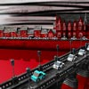
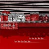
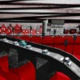
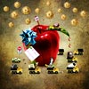
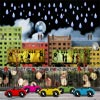
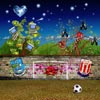

The Open Gallery
click thumbnail for full size image
Michael Murray






Michael Murray graduated from the University of Strathclyde in 2000 with a degree in Product Design, but then developed an interest in computer game art. After spending a couple of years as a games artist working on a LEGO title in London, he returned home to Glasgow to pursue a career as a digital artist. His work involves using photography and computer software to create exciting original pieces of digital artwork, and varies from stylish photographic collages of Glasgow landmarks, to vehicle caricatures, collages involving toy vehicles, and landscape scenes designed using 3D modelling.He has exhibited at the Lloyd Jerome gallery, Montgomeries cafe, Kinning Perk Cafe, Maclaurin Gallery, and the Glasgow Art Club.
His work may be found in The Scottish Arts Council, Edinburgh, along with cafes, bars, private houses, and offices in Scotland, the US, and Australia. As well as creating his own work he focuses largely on personal and corporate commissions, which includes art for bars, restaurants, hotels, and offices, as well as freelance graphic design work. His client list includes Starbucks, Bar Square, The Goat, Bar Bola, Kazaa Restaurant, and Keywest Design and Advertising. Personal commissions can be from photos (common subjects include pets, people, vehicles, and houses) and are great for gifts, or designed from scratch to fit a specific location and decor.
He is now a full member of the Glasgow Group artist collective (http://www.glasgowgroup.co.uk) where he shall be exhibiting throughout 2008 and beyond.